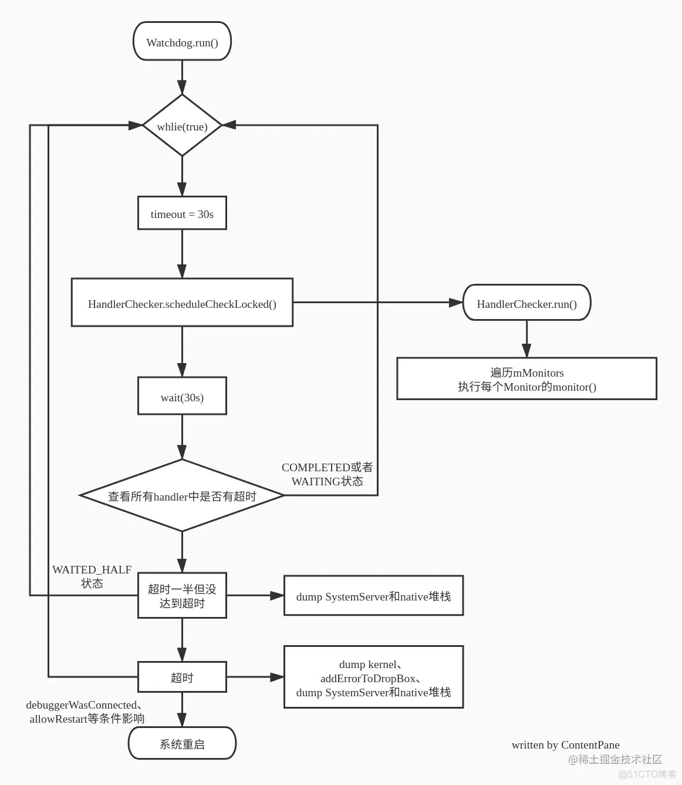

����������������������������������������������������������������������������������������������������������������������������������������������������������������������������������������������������������������������������������������������������������������������������������������������������������������������������������������������������������������������������������������������������������������������������������������������������������������������������������������������������������������������������������������������������������������������������������������������������������������������������������������������������������������������������������������������������������������������������������������������������������������������������������������������������������������������������������������������������������������������������������������������������������������������������������������������������������������������������������������������������������������������������������������������������������������������������������������������������������������������������������������������������������������������������������������������������������������������������������������������������������������������������������������������������������������������������������������������������������������������������������������������������������������������������������������������������������������������������������������������������������������������������������������������������������������������������������������������������������������������������������������������������������������������������������������������������������������������������������������������������������������������������������������������������������������������������������������������������������������������������������������������������������������������������������������������������������������������������������������������������������������������������������������������������������������������������������������������������������������������������������������������������������������������������������������������������������������������������������������������������������������������������������������������������������������������������������������������������������������������������������������������������������������������������������������������������������������������������������������������������������������������������������������������������������������������������������������������������������������������������������������������������������������������������������������������������������������������������������������������������������������������������������������������������������������������������������������������������������������������������������������������������������������������������������������������������������������������������������������������������������������������������������������������������������������������������������������������������������������������������������������������������������������������������������������������������������������������������������������������������������������������������������������������������������������������������������������������������������������������������������������������������������������������������������������������������������������������������������������������������������������������������������������������������������������������������������������������������������������������������������������������������������������������������������������������������������������������������������������������������������������������������������������������������������������������������������������������������������������������������������������������������������������������������������������������������������������������������������������������������������������������������������������������������������������������������������������������������������������������������������������������������������������������������������������������������������������������������������������������������������������UI thread. mHandlerCheckers.add(new HandlerChecker(UiThread.getHandler(), "ui thread", DEFAULT_TIMEOUT)); // check IO thread. mHandlerCheckers.add(new HandlerChecker(IoThread.getHandler(), "i/o thread", DEFAULT_TIMEOUT)); // display thread. mHandlerCheckers.add(new HandlerChecker(DisplayThread.getHandler(), "display thread", DEFAULT_TIMEOUT)); // animation thread. mHandlerCheckers.add(new HandlerChecker(AnimationThread.getHandler(), "animation thread", DEFAULT_TIMEOUT)); // surface animation thread. mHandlerCheckers.add(new HandlerChecker(SurfaceAnimationThread.getHandler(), "surface animation thread", DEFAULT_TIMEOUT));
// Initialize monitor for Binder threads.
addMonitor(new BinderThreadMonitor());
.................
}
2、判断
```java
mHandler.getLooper().getQueue().isPolling() // --------》 返回当前Looper是否没有在处理任务 <https://blog.csdn.net/oHeHui1/article/details/129058587>
Watchdog会不断判断这些线程的Lopper是否空闲，如果一直非空闲，那么必然就被阻塞了。
其他：
保存案发现场
WatchdogDiagnostics.diagnoseCheckers(blockedCheckers);
TODO:
为啥会和mSFHang，扯上关系？
1.1.1. 具体如何重启的？
// 结束进程 watchdog存在于system_server进程之下2
// 因为watchdog就是在system_server初始化的3
Process.killProcess(Process.myPid());
---------> 结论： 杀死system_server进程 ----------> TODO: 后续呢？ https://blog.csdn.net/weixin_43228946/article/details/129898004
扩展：mtk加强的重启：
pms.reboot(false, reason, false); // 掉电, 更加彻底
1.1.2. 安卓watchdog设计理念：
安卓watchdog设计理念：
检测到 抛过去的任务30s内，有没有执行完
跨线程的看门狗：c++
https://www.coder.work/article/3240296 c++ - 在 C++11 中实现看门狗定时器 ------> 同进程的！！！！！！！！
跨进程的看门狗：TODO: !!!!!!!!!
设计Aidl接口： 正向set的接口，反向通知接口 ------> 正向通知接口里 约束 必须反向通知
跟林的聊天记录：补充
为啥不以 进程状态显示为 "D" 表征进程正在阻塞？（因为我们还需要考虑busy running）
1.1.3. del:纵向流程图----字典

参考：android watchdog 重启 安卓 watchdog_小星星的技术博客_51CTO博客 https://blog.51cto.com/u_87634/6566226
1.1.4. del:每一行代码注释------字典
https://blog.51cto.com/u_87634/6566226
1.2. WatchDog本身
启动：
SystemServer.startBootstrapServices 中
本身是一个线程：无限循环的 --------> 可以理解为一个服务，但是不是binder
2. WatchDog 与 ANR比较
1、不同点：
(1) 进程角度：
WatchDog：同进程的 ： WatchDog线程对各种服务 TODO: 画图
TODO: 是不是跨进程也能这么玩？ 我在系统服务里，给APP主线程，插入一个任务，30s后，我再跨进程，查一下。。。。超时了，我就杀掉他
ANR: 跨进程：系统进程，对UI线程的监控
(2) 时机角度：
WatchDog 是 定期循环， ANR机制 是有input， 才会触发
-----------------> 并不是本质区别
2、相同点：
（1）检测内容一样：线程有没有 阻塞 + busy Running
（2）模型本质一样： 限定时间，给回调通知
-----------------> 感觉两者是同一个东西，不同场景的表达
3. del: TODO：补充 Linux 的Watchdog
Linux也引入了Watchdog，在Linux内核下，当Watchdog启动后，便设定了一个定时器，如果在超时时间内没有对/dev/Watchdog进行写操作，则会导致系统重启，通过定时器实现的Watchdog属于软件层面。
参考： https://blog.51cto.com/u_87634/6566226 android watchdog 重启 安卓 watchdog
4. 从模型角度，看watchDog的设计
保活进程设计：
框架侧在API内部单独起线程，喂狗
保活线程（比如保活主线程）：【1】
难点：主线程是一个loop，一个循环不定时，那么
watchDog两种模型：
主动告知型：你不断的主动告诉我（watchDog），你有没有死（不一定是固定频率，只要不超时）
被动问型： 我定期去问你，你有没有死
从模型的角度来看，问题【1】的困难点的根源：
主动告知型：你在忙，或者你在等（比如socket、死锁、消息）--------> 都不会主动找我
被动问型：
你在忙 （异常情况） -----> 不会主动找我
你在等（比如socket、死锁、消息） ------> 我的问，触发你不再阻塞 ------> 告诉我
无论哪一种，都难以解决问题【1】
与jiyong讨论：
从模型角度：
安卓可行的原因:
我问你的时候，你也被唤醒了（ 安卓用looper-handeler机制，这个大循环会被唤醒）
【1】可行的场景：
场景一：你的循环是 固定频率的
场景二：大概知道循环多久一次，多发，不超时即可（但要注意过频）
场景三：你本身是 event触发的系统。。。。被动问，这里“问”-----> 作为event触发你
这也是安卓可行的模型解释
场景四：被动问型模型下，主动构造触发：比如新起一个线程，定时触发你的循环，
比如发送一个消息触发 ---------> 安卓的策略
Q：安卓为什么可行？
A：本质因为安卓的线程 是消息驱动（正常的阻塞只会是等消息）------> 主动触发消息就好
自然：
如果是其他阻塞（比如，socket等消息、下载图片），安卓策略也失效推论：即安卓watchDOG检测的是loop